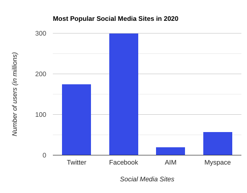
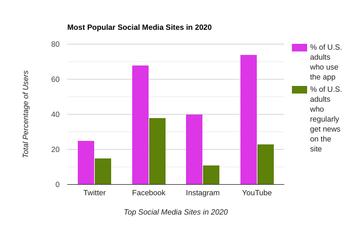

Apple’s first iPad.
One Direction’s placement on “The X-Factor.”
Ariana Grande’s big break on “Victorious.”
What do all of these things have in common? The year 2010.
2010 was not only the beginning of a new decade but a start to a rise in interactive technology that changed the way we create and share information: social media.
A decade ago, social media was largely dominated by companies such as Facebook/Meta, Twitter and Myspace, and was geared towards meeting new people and keeping in touch with others through online games and messaging sites such as Club Penguin and AIM. Photo editing and social media influencers weren’t even a thing yet and memes were virtually unheard of. Back then, it was hard to believe that social media would shift into becoming a global powerhouse.
Facebook dominated the 2010s, consistently ranking among the top social media companies. Data for this graph comes from TechCrunch, KPS3 and Business Insider.
In 2010, less than 1 billion people used social media, according to USA Today. Now, that number has since tripled and social media has evolved into affecting almost every aspect of our lives, from our daily decisions and news intake to even influencing how we look, communicate, vote and rally for social change and justice.
Based on results from the four largest social media sites, about 53% of Americans reported using social media as their regular source of news. Data from the graph comes from the Pew Research Center.
One of the largest changes that social media has made in our lives is intertwining in our career fields. For journalism, social media has changed the face of the practice forever. Because social media has now become one of the most popular ways to spread all types of news, it’s virtually impossible for a journalist not to be involved in social media in one aspect or another. But like social media, the 2010s were an integral decade that forced journalists to change how they gather and report news, and gave way to a change in how Americans receive their news. According to a survey from the Pew Research Center, 20% of Americans regularly received news from social networking sites in 2012, compared to just 7% in 2010. In 2020, that number rose to 86%.
Additionally, 2012 results showed that a majority of Americans still used traditional forms of journalism (such as newspapers and radio) to receive news; only 38% used online social sites to get their news. In 2020, over half of Americans reported using social media for news.
“I think it's important to see how far social media has come, but it's also important to know the dangers of it. You also can really get stuck in the ‘social media bubble’ and not realize that the world is different from what’s in your bubble. You just have to know how to get in and how to get out," said Tamara Keith, a White House correspondent for NPR and co-host of the NPR Politics Podcast.
As many journalists have done, Keith has had to change the way she uses social media to match growing trends. Since joining Twitter in 2008, Keith transitioned from posting thoughts about random topics to fostering a space for political discussions and debates. This, Keith says, has helped her gain a large following across platforms.
Training for a marathon + working @nprnews = this review of running apps. | http://t.co/PrgmTb5 Tune in Saturday AM for the radio version.
— Tamara Keith (@tamarakeithNPR) September 25, 2010
As was typical in her 2010 posts, Keith said she liked to tweet out links that featured personal accomplishments and updates.
The White House will announce later today that approx 900k kids will have gotten their COVID shots by the end of the day today. 700K more have appointments at pharmacies alone. That’s a lot of colorful band-aids. https://t.co/arfPPFizjA
— Tamara Keith (@tamarakeithNPR) November 10, 2021
Now, Keith sees her strategy as more engaging than before, and likes to tell stories using threads and has strictly turned to Twitter to help spread news
According to The Trint, Twitter has been heralded in the journalism community as the top social site for breaking news, with lots of big newsbreaks and options that allow users to build stories in real-time. But in reality, that’s not where most Americans go to get their news. The Pew Research Center found that Meta/Facebook, which has arguably been one of the most influential social media companies of the 2010s, stands out as a regular source of news for consumers. 2020 data shows that 36% of all adults regularly get news on the site, with 23% saying they use YouTube for their news and just 15% use Twitter.
But with the increase in social media usership came a rise in online controversy and justice movements; one of the largest being cancel culture. People, especially journalists, have been subject to online cancel movements that criticize a person for doing or posting something considered to be offensive; this essentially creates a large online movement that works to “cancel” the person in question. Though it is a relatively new concept, Vox reported that Lil Wayne helped circulate the term “cancel culture” in 2010 in a line from his song “I’m Single.” From there, cancel culture exploded into a worldwide movement that had led to the downfall of prominent individuals. And for journalists, cancel culture has taken the occupation by storm.
Now that social media has evolved into a much larger powerhouse as compared to its 2010 roots, people use it to hold others accountable through the cancel culture, and it's almost inevitable that journalists fall victim to the movement. In one instance, Keith remembers commenting on a tweet in 2017 by New York Times reporter Glenn Thrush, who posted a response to people saying he was normalizing Donald Trump. Keith replied, “yeah, I have muted the word ‘normalize.’”
Oh, I muted the word normalize in my mentions a long time ago.
— Tamara Keith (@tamarakeithNPR) April 26, 2017
By saying that she muted the word “normalize,” Keith took the Twitterverse by storm. As a tip, Keith recommends users carefully think about their wording of each social media post.
“Early on in the Trump era, people were just constantly shouting, ‘you’re normalizing him,’ and it was affecting my ability to do my job well. It’s tough trying to cover an unconventional president, and I was already worried about it. There was never any constructive feedback in a tweet that had the word ‘normalize’ in it,” Keith said. “My mistake was telling Glenn Thrush that I had muted the word. Because then [Twitter] went f***ing nuts.”
To this day, she still sees tweets pop up about her muting the word ‘normalize.’
“It’s truly unbelievable that [social media users] never forget. The dangers are very real,” she says.
Now, Keith recommends posting social media content with extreme caution.
To learn more about cancel culture, listen to this NPR podcast about the role it’s played in our society.
Social media has essentially upended our world. It’s virtually impossible to not be associated with some form of the technology as it grows to encompass larger sections of our society. With its ever-changing trends and topics, it’s hard to see what form social media will take in the future. But one thing’s for certain: it’s here to stay.